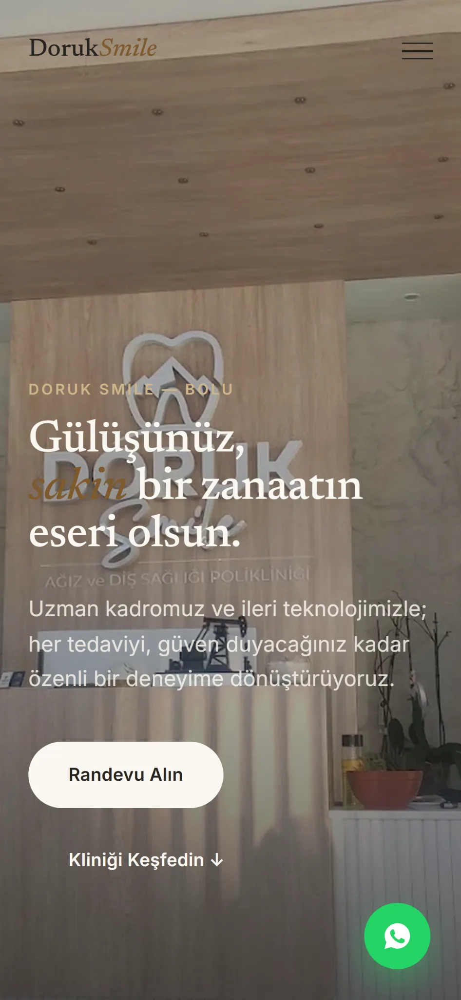
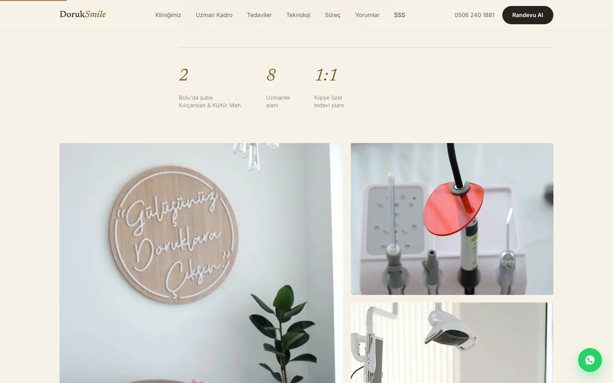
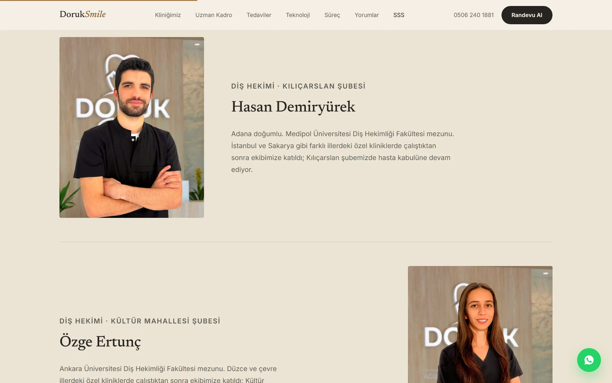
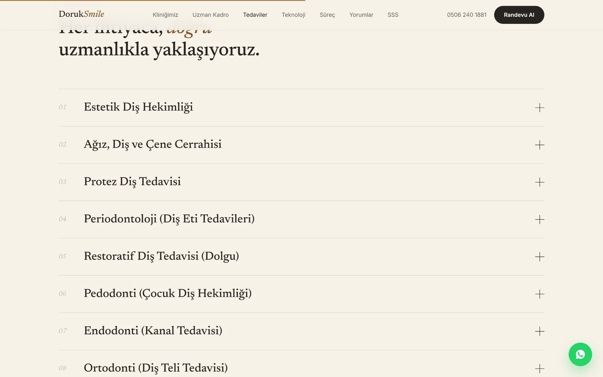
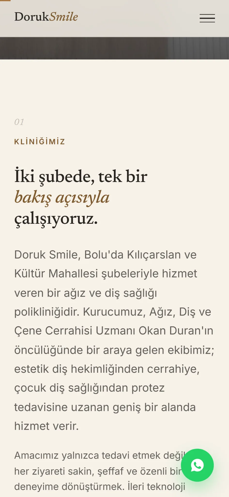
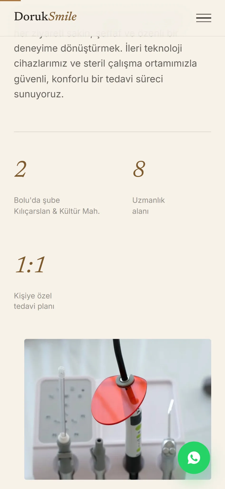
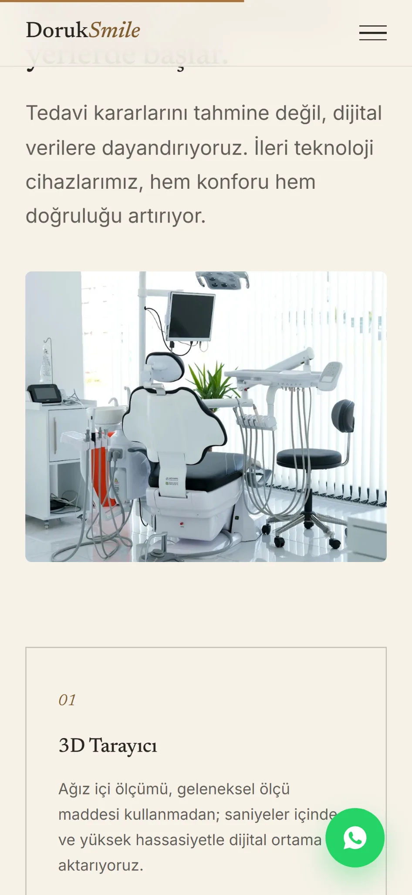
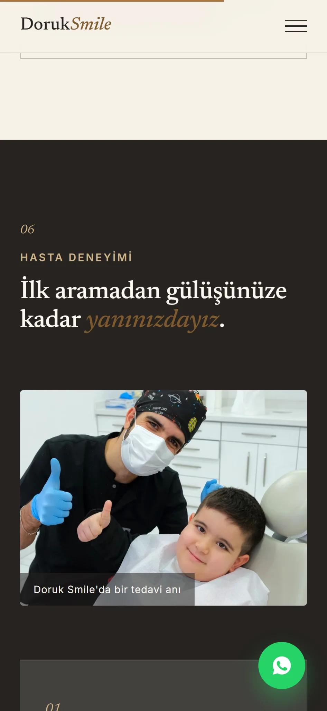

Premium marka dili
Gerçek klinik fotoğrafları, editöryel tipografi ve sıcak renk paletiyle fiziksel mekânın karakteri dijitale taşındı.
Kliniğin fiziksel kalitesini dijitale taşıyan; güven, uzmanlık ve randevu akışını tek bir premium deneyimde birleştiren web konsepti.
Bu çalışma, modern diş klinikleri için hazırlanan bağımsız bir demo projedir.


Gerçek klinik fotoğrafları, editöryel tipografi ve sıcak renk paletiyle fiziksel mekânın karakteri dijitale taşındı.
Klinik, uzman kadro, teknoloji ve tedaviler; ziyaretçinin karar sürecine uygun bir sıra içinde sunuldu.
Randevu ve WhatsApp çağrıları, kullanıcıyı rahatsız etmeden deneyimin kritik noktalarına yerleştirildi.



Uzun içerikler küçük ekranda sadece küçültülmedi; başlık ritmi, görsel oranlar, kart genişlikleri ve çağrı noktaları mobil davranışa göre yeniden düzenlendi.




Marka, içerik, tasarım ve geliştirmeyi tek süreçte buluşturarak güven veren bir web deneyimi hazırlayalım.